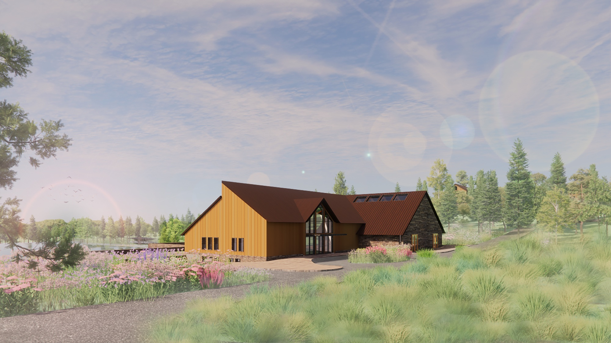
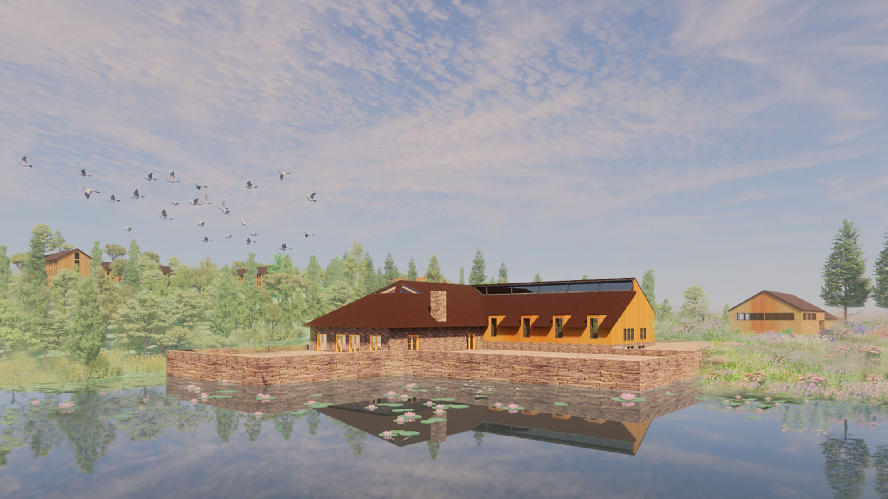
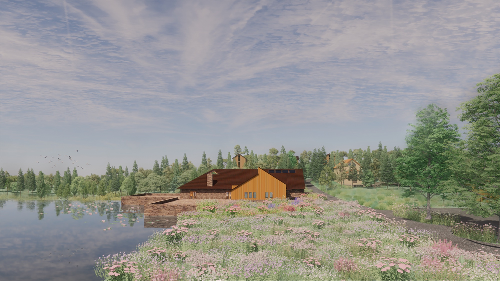

Projects
Competition renderings for an educational facility set within a natural landscape. The building sits low at the edge of a lake, its dark pitched roof and gabled form responding to the surrounding forest. The project integrates the building into a meadow ecology of wildflowers and water, proposing a learning environment shaped by its site as much as its program.


